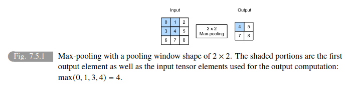

Chapter 7 - CNN
Table of Contents
- 1. The problem with images for MLPs
- 2. From Fully Connected Layers to Convolutions
- 3. Invariance
- 4. Constraining the MLP
- 5. Translation Invariance, Locality, Convolutions, Channels
- 6. Cross-Correlation and Convolution
- 7. Feature Map and Receptive Field
- 8. Padding and Stride
- 9. Multiple Input and Multiple Output Channels
- 10. Pooling
1. The problem with images for MLPs
- Images are two dimensional grid of pixels. Each pixel corresponds to one or multiple numerical values (one - if image is monochromatic, multiple - if image is colored).
- So far we have ignored this rich structure and treated images as vectors of numbers by flattening them, irrespective of the spatial relation between pixels.
- This deeply unsatisfying approach was necessary in order to feed the resulting one-dimensional vectors through a fully connected MLP.
2. From Fully Connected Layers to Convolutions
- The main point is that while fully connected layers (used in MLPs) are suitable for tabular data, they become impractical and inefficient when dealing with high-dimensional data like images. CNNs, on the other hand, are designed to exploit the inherent structure in images, making them much better suited for image-related tasks.
- Images have a very specific structure. Pixels close to each other are often related (e.g., they form part of the same object), and there are patterns (edges, textures, shapes) that are crucial for understanding the image content.
- Imagine each pixel in the image as an input node. In a fully connected layer, every input node is connected to every node in the hidden layer. Each connection has a weight (parameter) associated with it. With millions of input nodes and thousands of hidden nodes, the number of connections (and thus, parameters) explodes.
- MLPs treat each pixel as an independent feature, completely ignoring the spatial relationships between them. In a picture of a cat, an MLP would treat a pixel in the cat’s ear the same as a pixel in the background, even though they have very different meanings in the context of the image.
3. Invariance
- The core idea is that a good object detection system should be able to recognize an object regardless of its location in the image. This property is called translation invariance. CNNs are designed with this principle in mind, along with the principle of locality, to learn efficient and effective representations for images.
- If you see a pig in the bottom-left corner of an image, you can still recognize it as a pig if it appears in the top-right corner. The ability to identify an object independent of its position is fundamental to our visual system.
- Finding Waldo in a cluttered image is difficult because there are many distracting elements. However, our ability to recognize Waldo is not dependent on where he is hidden in the image. We know what Waldo looks like (his features), and we can scan the image for those features regardless of their location.
We could sweep the image with a Waldo detector that could assign a score to each patch, indicating the likelihood that the patch contains Waldo. In fact, many object detection and segmentation algorithms are based on this approach (Long et al., 2015). CNNs systematize this idea of spatial invariance, exploiting it to learn useful representations with fewer parameters.
- By above points, we will design a neural network suitable for computer vision:
- Translation Invariance (or Equivariance): The network should respond similarly to the same pattern (e.g., Waldo’s striped shirt) no matter where it appears in the image.
- There’s a subtle difference between invariance and equivariance. Invariance means the output doesn’t change at all when the input is translated. Equivariance means the output changes in a predictable way when the input is translated (e.g., if the input is shifted to the right, the output map is also shifted to the right). CNNs are technically equivariant, but the terms are often used interchangeably in a less formal context.
- Locality: The initial layers of the network should focus on small, local regions of the image. This is based on the idea that nearby pixels are often related and contribute to the formation of local features (e.g., edges, textures). It wouldn’t make sense for early layers to try to understand relationships between pixels that are very far apart.
- Hierarchical Feature Extraction: As we go deeper into the network, the layers should capture increasingly larger and more complex features, building upon the local features detected in earlier layers. This is similar to how our visual system works, with early processing in the visual cortex focusing on simple features and later processing in higher cortical areas dealing with more complex objects and scenes.
- Translation Invariance (or Equivariance): The network should respond similarly to the same pattern (e.g., Waldo’s striped shirt) no matter where it appears in the image.
- In Simpler Terms:
- Translation Invariance: You want your system to recognize a cat whether it’s in the center, corner, or anywhere else in the image.
- Locality: You start by detecting simple features like edges, corners, and fur patterns in small patches of the image.
- Hierarchical Feature Extraction: You combine these simple features to form more complex features like eyes, ears, and eventually the whole cat.
4. Constraining the MLP
- The core idea is to represent both the input image and the hidden representation as two-dimensional matrices (or tensors) to reflect their spatial structure. Then, it introduces a fourth-order weight tensor to connect these two, suggesting a move towards localized connections. However, even with this change, the number of parameters remains astronomically high for fully connected networks.
- Not only the input image (X) but also the hidden representation (H) should be treated as having spatial structure. This means arranging the units in H in a two-dimensional grid that corresponds to the spatial layout of the input image X.
- Think of the hidden layer not as a single long vector but as a feature map that retains the spatial organization of the image. Each unit in this hidden layer represents a specific location in the input image and is responsible for detecting certain features in that area.
- We will use a fourth order weight tensor W instead of weight matrix. This tensor connects the input image X to the Hidden representation H.
- Let [X]ùëñ, ùëó and [H]ùëñ, ùëó denote the pixel at location (ùëñ, ùëó) in the input image and hidden representation, respectively.
- The dimensions i,j,k,l in W means
- i, j: Specify the location in the hidden representation H.
- k, l: Specify the location in the input image X.
- [W]i,j,k,l represents the weight connecting the input pixel at location (k, l) to the hidden unit at location (i, j). With a 2D input and 2D hidden representation, you need four indices to specify all possible connections, hence a fourth-order tensor.
- The first line in the equation describes how to calculate the value of a hidden unit at location (i, j) in H.
- [U]i,j: This is the bias term for the hidden unit at (i, j).
- Σk Σl [W]i,j,k,l [X]k,l: This part calculates the weighted sum of all input pixels, where each pixel [X]k,l is multiplied by its corresponding weight [W]i,j,k,l. The double summation (Σk Σl) means we sum over all possible k and l values (i.e., all pixels in the input image).
- The second line in the equation rewrites the previous one using a new fourth-order tensor V. This is done to hint at the idea of local receptive fields that will come later with convolutions.
- [V]i,j,a,b: This is just a re-indexed version of [W]i,j,k,l.
- [X]i+a,j+b: This represents a pixel in the input image that is offset from the location (i, j) by (a, b).
- Instead of summing over all absolute pixel locations (k, l), we are now summing over relative offsets (a, b) from the central location (i, j). This is the first step towards thinking about local connections.
5. Translation Invariance, Locality, Convolutions, Channels
- By applying the principles of translation invariance and locality, the initial, overly complex formulation of the MLP is transformed into a convolutional layer. This significantly reduces the number of parameters and makes the model more suitable for image data. The section then extends this to handle multiple channels, paving the way for processing color images and learning more complex features.
- Translation Invariance: If the input image shifts, the hidden representation should also shift correspondingly. This means that the weights (V) and the bias (U) cannot depend on the absolute pixel location (i, j).
- The equation now leads to: (The weights now only depend on the relative offset (a, b), not the absolute location (i, j))
- The above equation is called Convolution because it calculates the value of a hidden unit [H]i,j by taking a weighted sum of the pixels in the neighborhood of (i, j), where the weights are given by [V]a,b.
- Locality: We don’t need to look at pixels very far away from (i, j) to determine [H]i,j. This means we can limit the range of a and b to a small value Œî.
- This means that outside some range |ùëé| > Œî or |ùëè| > Œî, we should set [V]ùëé,ùëè = 0. Equivalently, we can rewrite [H]ùëñ, ùëó as
- By limiting the range of a and b, we further reduce the number of parameters from 4 x 106 to 4Δ2. If Δ is small (e.g., 10), this is a massive reduction.
- Convolutions: In mathematics, the convolution between two functions, say ùëì , ùëî : Rùëë → R is defined as
- That is, we measure the overlap between ùëì and ùëî when one function is ‚Äúflipped‚Äù and shifted by x.
- Channels: Color images have three channels (Red, Green, Blue), so the input X is now a third-order tensor [X]i,j,k, where k indexes the color channel.
- Look at ./CNN_channels_explanation.txt
6. Cross-Correlation and Convolution
- The main point is that while there’s a mathematical difference between cross-correlation and convolution (involving flipping the kernel), in deep learning, convolutional layers often perform cross-correlation but are still referred to as “convolutions.” This is because the learned kernels effectively adapt to whichever operation is used, resulting in the same output regardless.
- This is because the Kernels are learned from the data. If a convolutional layer is designed to perform cross-correlation, it will learn a kernel that produces the desired output using cross-correlation. If the same layer is changed to perform strict convolution, it will learn a different kernel that, when flipped and used in cross-correlation, produces the same desired output.
7. Feature Map and Receptive Field
- The main idea is that the output of a convolutional layer can be viewed as a feature map, where each element represents a learned feature at a specific spatial location. The receptive field of an element in a feature map defines the region in the input image that influences its value. Deeper networks allow for larger receptive fields, enabling the detection of features over broader areas of the input.
- The output of a convolutional layer is often called a feature map because it represents the learned features of the input image, organized spatially.
- In Fig. 7.2.1, the 2x2 output is a feature map. Each of the four values (19, 25, 37, 43) represents the presence of a particular feature (learned by the kernel) at a specific location in the input.
- The receptive field of an element in a feature map is the set of all elements (from all previous layers, including the input) that can potentially affect the value of that element during forward propagation.
- The receptive field can be larger than the actual size of the input to the convolutional layer. This is because the receptive field considers the influence of elements from all previous layers.
8. Padding and Stride
- Padding adds extra pixels (usually with a value of 0) around the borders of the input image to prevent the output from shrinking too much after convolutions, especially when multiple layers are stacked.
- When applying convolutions, especially with larger kernels, the output feature map shrinks because the kernel can’t be fully applied at the edges of the input. This can lead to significant information loss, especially after multiple convolutional layers. The corner pixels are also not fully utilized, as shown in the image, when compared to the pixels in the center of the image.
- Padding adds extra rows and columns of pixels (typically filled with zeros) around the border of the input image. This effectively increases the size of the input, allowing the kernel to be applied to the original border pixels without shrinking the output as much.
- Output Shape = (nh - kh + ph + 1) × (nw - kw + pw + 1)
Often, padding is set to ph = kh - 1 and pw = kw - 1 to maintain the same input and output dimensions when the stride is 1. This is especially convenient when using kernels with odd dimensions (e.g., 3x3, 5x5) as you can add the same amount of padding to both sides.
- Stride determines how many pixels the convolution window shifts at each step. A stride greater than 1 reduces the output size, providing a form of downsampling.
- Stride controls how many pixels the convolution window moves at each step, both horizontally and vertically. A stride of 1 means the window moves one pixel at a time (as in the standard convolution). A stride greater than 1 means the window skips pixels, resulting in a smaller output.
- The figure below illustrates a stride of 3 vertically and 2 horizontally. The kernel jumps over multiple pixels at each step, resulting in a smaller output. The shaded regions show how the output elements are calculated with the larger stride.
Output Shape = ⌊(nh - kh + ph + sh) / sh⌋ × ⌊(nw - kw + pw + sw) / sw⌋
| Feature | Padding | Stride |
|---|---|---|
| Purpose | Prevent output shrinkage, preserve spatial dimensions | Reduce output size, downsample, increase computational efficiency |
| Mechanism | Add extra pixels around the input border | Move the kernel in larger steps across the input |
| Effect | Increases or maintains output size | Decreases output size |
9. Multiple Input and Multiple Output Channels
- Multiple Input Channels: CNNs handle multiple input channels (like the RGB channels of a color image) by using a kernel with the same number of channels as the input. The convolution is performed separately on each channel, and the results are summed to produce a single output channel.
- When dealing with multi-channel input data (e.g., color images), each channel represents a different aspect of the data (e.g., red, green, blue intensities).
To handle ci input channels, the convolution kernel also needs to have ci channels. The kernel’s shape becomes ci × kh × kw.
- Multiple Output Channels: To get multiple output channels, a CNN uses multiple kernels, each producing one output channel. These kernels are stacked together to form a tensor with dimensions (outputchannels, inputchannels, kernelheight, kernelwidth).
- Using multiple output channels allows the network to learn different features from the input. Each output channel can specialize in detecting a particular pattern or aspect of the data.
- To create co output channels, we use co different kernels. Each kernel has the shape ci × kh × kw (to handle the ci input channels).
- These co kernels are stacked together along a new dimension (the output channel dimension), resulting in a kernel tensor with shape co × ci × kh × kw.
- In practice, CNN architectures often increase the number of channels as you go deeper into the network. This allows the network to learn increasingly complex and abstract features while simultaneously reducing the spatial resolution (using techniques like pooling or strides).
- 1x1 Convolutions: These use a kernel size of 1x1 and act as a fully connected layer applied to each pixel across all channels. They are used to change the number of channels and to learn complex combinations of features across channels.
- At first glance, a 1x1 convolution seems pointless because it doesn’t consider interactions between neighboring pixels in the spatial dimensions.
- A 1x1 convolution operates solely on the channel dimension. For each spatial location (pixel), it takes the ci input values across all channels and computes a weighted sum of those values to produce co output values.
You can think of a 1x1 convolution as applying a fully connected layer to each pixel individually, where the weights are shared across all pixels. The number of weights is co × ci (plus biases).

10. Pooling
- Pooling layers reduce the spatial dimensions of feature maps, providing a form of downsampling and making the network more robust to small translations in the input. They operate by sliding a window over the input and computing a summary statistic (maximum or average) of the values within the window.
- Pooling makes the network less sensitive to the precise location of features. A small shift in the input is less likely to change the output of the pooling layer significantly, especially with max-pooling.
- Pooling reduces the spatial resolution of the feature maps, which decreases the computational cost and the number of parameters in subsequent layers. It also increases the receptive field of deeper layers.
- By progressively reducing spatial dimensions, pooling helps the network to learn global representations of the input.
- Similar to convolutional layers, pooling uses a window (e.g., 2x2) that slides over the input feature map.
Unlike convolutional layers, pooling layers have no learnable parameters (no kernels). They perform a fixed operation.

- Max-Pooling: Takes the maximum value within the pooling window.
- Average Pooling: Takes the average value within the pooling window.
- Pooling channels like kernels can also be specified with it’s own dimensions, padding, stride.
- Unlike convolutional layers where channels are summed, pooling layers operate on each channel independently.